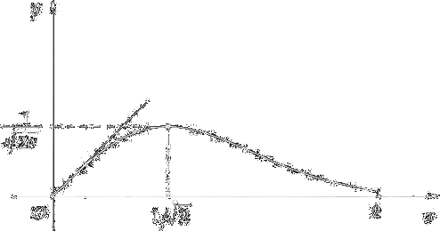
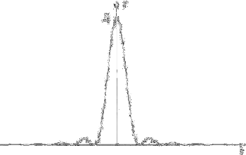
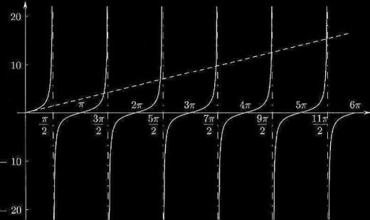

Lo studio della funzione nei punti critici è basato sul teorema seguente.
Teorema Teorema 5.10.1 (condizioni sufficienti per l'esistenza di un estremo). f: [a,b] ⟶ ℝ una funzione continua nell'intervallo [a,b] contentenente il punto critico x0 e derivabile in ogni punto di questo intervallo (tranne, al più, nel punto x0). Se la derivata cambia il segno da più a meno quando passa da sinitra a destra del punto critico, la funzione ha un massimo per x = x0. Se invece la derivata cambia il segno da meno a più, quando passa da sinistra a destra del punto x0, la funzione ha un minimo in questo punto. Così se a)
f'(x) > 0
per
x < x0
f'(x) < 0
per
x > x0
la funzione ammette un massimo nel punto x1.
Se b)
f'(x) < 0
per
x < x0
f'(x) > 0
per
x > x0
la funzione ammette in minimo nel punto x0. Inoltre, si deve tener presente che le condizioni a) e b) debbono corrispondere a tutti i valori di x sufficientemente vicini a x0, cioè a tutti i punti di un intorno sufficientemente piccolo del punto critico x0.
Dim. Supponiamo dapprima che la derivata cambi il segno da più a meno, cioè per tutti gli x sufficientemente vicini al punto x0 abbiamo
f'(x) > 0
per
x < x0
f'(x) < 0
per
x > x0
Applicando il T. di Lagrange alla differenza f(x) − f(x0), si ottiene
f(x) − f(x0) = f(c)(x − x0)
dove c è un punto compreso tra x e x0.
Sia x < x0, allora
c < x0, f'(c) > 0, f(c)(x − x0) < 0
e, di conseguenza,
f(x) − f(x0) < 0
ovvero
f(x) < f(x0) (5.10.2)
Sia x > x0, allora
c > x0, f'(c) < 0, f(c)(x − x0) < 0
e, di conseguenza,
f(x) − f(x0) < 0
ovvero
f(x) < f(x0) (5.10.3)
Le relazioni (5.10.2) e (5.10.3) mostrano che per tutti i valori di x, sufficientemente vicini a x, il valore della funzione è inferiore al valore della funzione nel punto x0. Ciò significa proprio che la funzione ammette un massimo nel punto x0. Analogamente si dimostra la seconda parte. □.
Suppose we want to find maxima and minima of the function f: [a,b] ⟶ ℝ. If f is differentiable we can proceed as follows
Calculate the values f(a) and f(b).
Calculate f'(x) and solve the equation f'(x) = 0 to find the stationary points.
If there are no stationary points then f(a) and f(b) are extreme values. Conversely if x0 ∈ (a,b) is a stationary point, that is f'(x0) = 0.
If in a left neighborhood of x0 we have f'(x) ≥ 0 and in a right neighborhood of x0 we have f'(x) ≤ 0, then x0 is a point of local maximum.
If in a left neighborhood of x0 we have f'(x) ≤ 0 and in a right neighborhood of x0 we have f'(x) ≥ 0, then x0 is a point of local minimum.
x0 maximum point
x < x0
x > x0
f'(x) ≥ 0
f'(x) ≤ 0
f ↗
f ↘
x0 minimum point
x < x0
x > x0
f'(x) ≥ 0
f'(x) ≤ 0
f↘
f↗
Segno della derivata prima e comportamento della funzione
Once found the extrema we evaluate the function at these points and compare their values with those of f(a) and f(b)
Esempio 5.10.1. Sia f(x) = xe−x2 con x ∈ [0,2]. Find the global maxima and minima of f.
f(0) = 0, f(2) = 2e−4.
f'(x) = e−x2 + xe−x2(−2x) = e−x2(1 − 2x2)
f'(x) = 0 ⇔ 1 − 2x2 = 0 ⇒ x = ± 1/√2.
Solo x0 = +1/√2 ∈ [0,2] e perciò è questo l'unico punto stazionario.
Studiamo ora il segno di f', vicino a x0 = 1/√2:
f'(x) ≥ 0 per 2x2 ≤ 1 ≥0 for −1/√2 ≤ x ≤ 1/√2
Si deduce quindi che x0 = 1/√2 è punto di massimo locale.
Since there's only a stationary point we can compare the value of f 1/√2 with those at the boundaries:
f(1/√2) = 1/√2 ⋅ e−1/2 = 1/1/√(2e) è maggiore sia di f(0) = 0 che di f(2) = 2/e4. Si conclude quindi che:
f(0) = 0 è minimo globale f(1/√2) è massimo globale
Si noti che in questo caso, il fatto che esista un solo punto stazionario con ordinata maggiore di quella agli estremi dell'intervallo, permette di trarre le stesse conclusioni anche senza lo studio del segno della derivata prima. Un grafico qualitativo di f è il seguente

Grafico in [0,2] di f(x) = xe−x2; si noti che f(x) ~ x → 0.
Se volessimo studiare i max e min locali di f(x) su tutto ℝ, il segno della derivata prima ci direbbe che
x = 1/√2 è punto di max locale; x = −1/√2 è un punto di min locale ■
Esempio 5.10.2. (Figura di diffrazione della luce attraverso una fenditura). Un fascio di luce che attraversa una piccola fenditura la cui larghezza è dello stesso ordine di grandezza della lunghezza d'onda della luce, produce, su uno schermo su cui incide, una figura di interferenza. L'intensità luminosa in un punto dello schermo è data dalla funzione:
dove I0 è l'intensità massima (che si ottiene nel punto centrale) e l'angolo φ è collegato alla differenza di fase tra le due onde luminose che passano ai due estremi della fenditura. Cerchiamo i massimi e minimi di I in funzione di φ. Anzitutto, conviene porre t = φ/2 e cercare massimi e minimi della funzione
(questo significa semplicemente cambiare scala sull'asse φ; basterà ricordare poi che φ = 2t). Il grafico qualitativo di questa funzione può essere tracciato facilmente, senza calcoli: la funzione sin t/t è pari, vale 1 in 0, ha infinite oscillazioni smorzate per t → ∞; di conseguenza la funzione I = I0 (sin t/t)2 è pari, non negativa, vale I0 in 0, ed ha infinite oscillazioni smorzata:

Vediamo quindi che I ha infiniti punti di minimo, nei punti in cui si annulla, t = kπ (cioè φ = 2kπ), e infiniti punti di massimo, di cui il massimo assoluto è per t = 0 (φ = 0), e vale I0. Il problema è determinare gli altri punti di massimo relativo. Questi si trovano risolvendo l'equazione
Il fattore sin t si annulla nei punti di minimo che già conosciamo; i punti di massimo sono dunque le soluzioni di
t cos t − sin t = 0
equazione che non può essere risolta in modo esatto, ma che si studia facilmente con un confronto grafico: riscritta nella forma
t = tg t
possiamo osservare dal grafico delle funzioni t, tg t, dove sono collocate le soluzioni.

Il primo punto positivo di max si trova poco prima di 3π/2; il secondo poco prima di 5π/2, e così via; più ci si allontana dall'origine, più questi punti tendono a coincidere esattamente con i valori t = 3π/2 + kπ (quindi φ = 3π + 2kπ). Dunque ogni punto di massimo si trova approssimativamente a metà strada tra due punti di minimo succesivi. I valori dei max relativi saranno all'incirca
Una localizzazione più precisa delle sol uziono dell'equazione t = tg t si potrà dare con il metodo di Newton.
Successioni monotone
Come abbiamo visto nel cap. 3, le successioni monotone hanno importanti proprietà. D'altro canto, non sempre è facile dimostrare la monotonia di una successione per via algebrica. Il calcolo differenziale ci offre un metodo utile.
Esempio 5.10.3. Sia an = log n/n. Sappiamo che an ≥ 0 e an ⟶ 0 (per confronto tra infiniti). Per definizione, ciò significa che
an+1 ≤ an i.e. log(n+1)/(n+1) ≤ log n/n
Poiché al crescere di n sia il numeratore che il denominatore crescono, non è facile provare questa disuguaglianza. D'altro canto, sia
f(x) = log x/x for x > 0
(Ora la variabile x inon è un interno, ma un numero reale!). Calcoliamo
f'(x) = [1 − log x]/x2 for x ≥ e
Ne segue che f è decrescente per x ≥ e; di conseguenza la successione an = f(n) è decrescente per n ≥ 3 (il primo intero > e). Nel cap. 5, parlando di serie a segni alterni, vedremo un'applicazione di questa osesrvazione:/p>
It is an alternating series and since an = log n/n is positive, infinitesimal, and as proved monotonically decreasing, by Leibniz Criterion. The monotoniciy is paramount to prove the convergence of the series. ■
Il passaggio "dal discreto al continuo" (ciè dagli interi ai reali) è un modo per avere a disposizione gli strumenti del calcolo differenziale. Attenzione a non usare indiscriminatamente questo espediente. Si ragioni sul fatto che in quest omodo non si potrebbe studiare la monotonia di successioni come